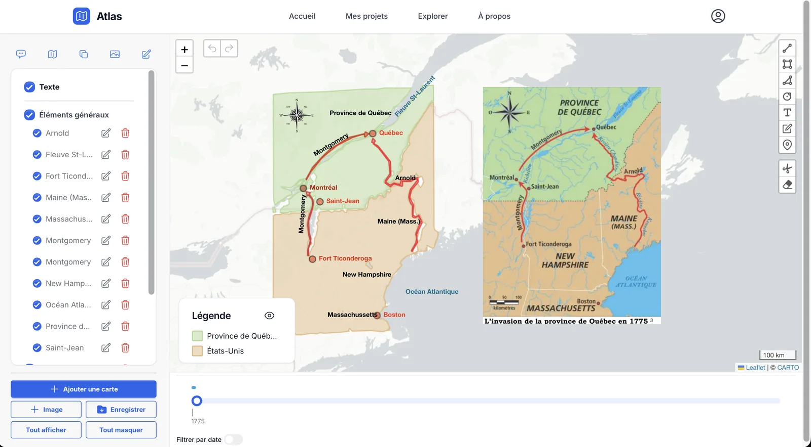

Projet de fin d'études
Atlas
Plateforme web libre qui aide les enseignants d'histoire et de géographie à numériser des cartes anciennes : on importe une image, Atlas en extrait le texte, les couleurs et les formes, puis les replace sur une carte du monde avec une ligne du temps.
Mon rôle : coordination de l'équipe, extraction de formes et déploiement.